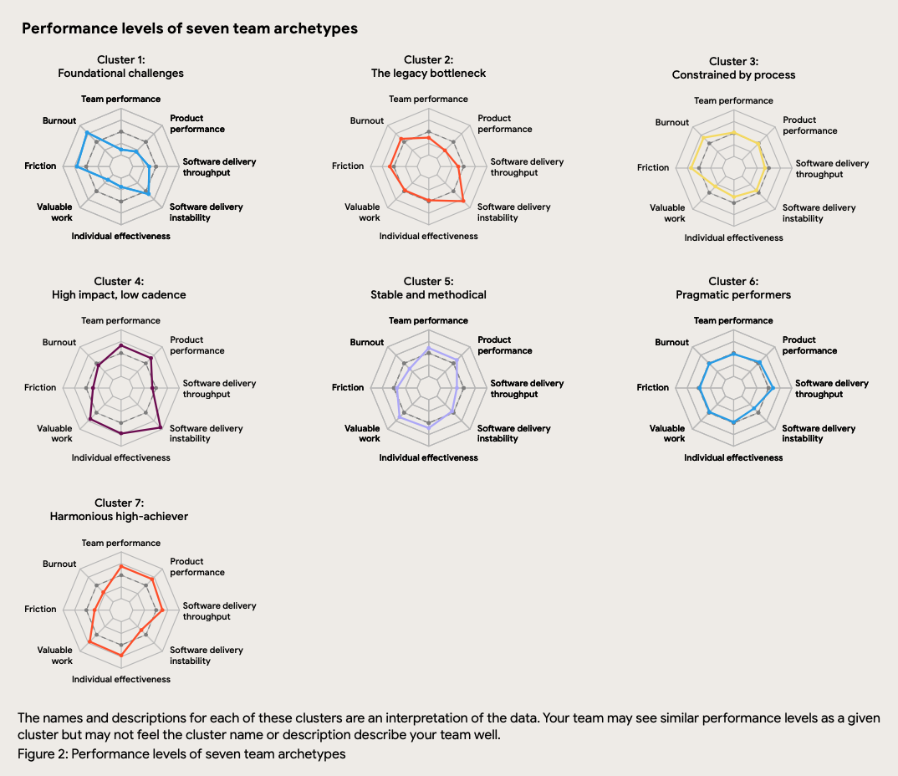
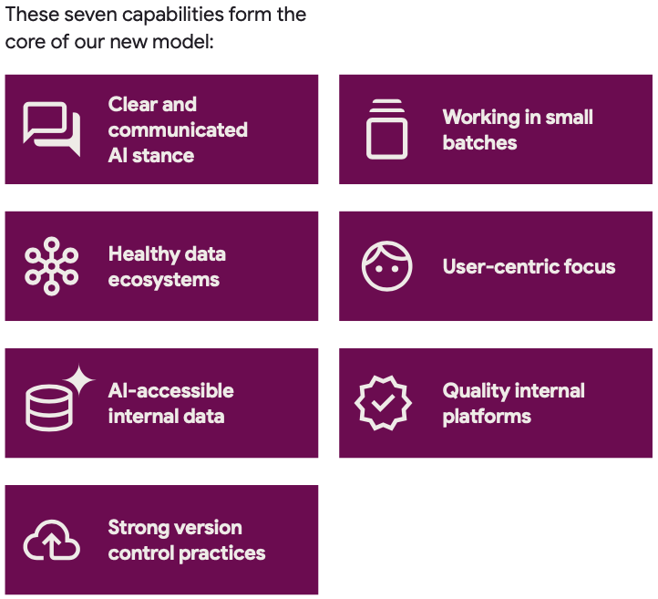

DORA e IA: Lições para Líderes Usarem IA como Alavanca (e Não Acelerador de Caos)
1. Introdução: A Era da IA Chegou (e o DORA Tem o Mapa)
A inteligência artificial deixou de ser promessa e virou pressão. Como líder de uma startup ou PME, você provavelmente sente a urgência: “Precisamos usar IA para não ficar para trás”. Mas, em meio ao hype, como saber se você está investindo em uma revolução ou apenas acelerando em direção ao caos?
Felizmente, temos uma bússola confiável: a pesquisa DORA (DevOps Research and Assessment). Por mais de uma década, o DORA tem sido o padrão-ouro para entender o que realmente impulsiona a performance em times de tecnologia, baseado em dados de dezenas de milhares de profissionais globalmente.
E os insights mais recentes são cruciais para a era da IA. Os relatórios DORA de 2024 e 2025 trazem uma mensagem clara: IA não é mágica, é um amplificador.
Se seus sistemas, processos e cultura já são eficientes, a IA pode potencializar seus resultados de forma impressionante. Mas, se sua operação está travada em gargalos, desalinhamentos e “caos organizado”, a IA vai apenas potencializar esses problemas, tornando tudo mais rápido, porém pior.
Na CM-XO, acreditamos que a tecnologia deve ser uma Alavanca Estratégica. Para que a IA funcione como essa alavanca – e não como um acelerador de caos –, você precisa construir (ou fortalecer conscientemente) os fundamentos certos. A boa notícia? A própria jornada DORA, da ascensão do DevOps à consolidação da Engenharia de Plataforma, já nos ensinou quais são esses fundamentos essenciais.
A Lição que se Repete: Fundamentos Primeiro (Mesmo que em Paralelo)
A empolgação com a IA hoje lembra muito o início do movimento DevOps e, mais recentemente, a ascensão da Engenharia de Plataforma. Em cada uma dessas ondas, a promessa era de ganhos exponenciais de velocidade e eficiência. E, em cada uma, a pesquisa DORA mostrou que a realidade era mais complexa: a tecnologia só entrega seu potencial máximo quando sustentada por fundamentos sólidos.
Vamos relembrar essa jornada, porque a lição é a mesma para a IA:
- A Era DevOps (Fundamentos Refletidos no DORA 2023 e Relatórios Anteriores): O objetivo era acelerar a entrega de software. As equipes que focaram apenas em ferramentas de automação (CI/CD) sem investir em cultura colaborativa (quebrando silos entre Dev e Ops), processos ágeis (lotes menores, feedback rápido) e monitoramento (visibilidade da produção) acabaram criando mais instabilidade e gargalos. O DORA consistentemente mostrou que cultura e processos eram pré-requisitos.
- A Ascensão da Engenharia de Plataforma (Foco do DORA 2024): Para escalar as práticas DevOps em organizações maiores, surgiram as plataformas internas. A ideia era oferecer “estradas pavimentadas” ou “golden paths” para os desenvolvedores. No entanto, o DORA 2024 revelou que plataformas de baixa qualidade ou que não focavam na experiência do desenvolvedor (DX) viravam novos gargalos, diminuindo a performance em vez de aumentá-la. Uma boa plataforma interna se tornou essencial.
- A Chegada da IA (Foco DORA 2024/2025): A história se repete, mas de forma amplificada. O DORA 2024 inicialmente mostrou que a adoção de IA estava associada a pioras no throughput e, principalmente, na estabilidade das entregas. Já o DORA 2025 aponta uma melhora no throughput, mas a instabilidade persiste. Mais importante: o sucesso da IA depende crucialmente de capacidades organizacionais, como uma política clara de IA, uma plataforma interna de qualidade e foco no usuário.
A lição é clara: tentar adotar IA em escala sem uma base sólida é como tentar construir um arranha-céu sobre areia movediça.
Nem toda empresa pode pausar tudo para construir essa base “perfeita” antes de começar. A realidade exige operar e evoluir ao mesmo tempo. A chave, então, não é ter tudo pronto, mas sim construir e fortalecer esses fundamentos com consciência e intencionalidade, em paralelo. Ignorar essa construção contínua garante que a IA, em vez de ser sua alavanca, se tornará um potente acelerador de caos.
Diagnóstico Rápido: Onde Sua Equipe Está na Jornada IA? (Usando DORA 2025)
Antes de acelerar com IA, você precisa saber onde está pisando. Quais são os pontos fortes e fracos reais da sua operação de tecnologia hoje? É aqui que os 7 Perfis de Equipe (Team Archetypes), introduzidos no relatório DORA 2025, se tornam uma ferramenta de diagnóstico poderosa para líderes.
Esses perfis vão além das métricas isoladas de entrega (as “Four Keys”). Eles combinam dados sobre performance da equipe, performance do produto, throughput, instabilidade, eficácia individual, trabalho de valor, atrito (friction) e burnout, pintando um quadro muito mais completo da saúde e capacidade de cada time.

Pense nesses perfis como um “raio-x” rápido da sua organização. Veja alguns exemplos contrastantes:
- Cluster 7: Harmonious high-achiever (“Alta Performance Harmoniosa”): O ideal. Entregam rápido, com estabilidade, criam produtos de valor, a equipe colabora bem, tem baixo atrito e baixo burnout. Diagnóstico: Uma base excelente para amplificar com IA.
- Cluster 2: The legacy bottleneck (“Gargalo do Legado”): Entregam com frequência, mas a instabilidade é altíssima, a performance do produto é baixa e a equipe sofre com atrito e burnout elevados. Diagnóstico: Introduzir IA aqui provavelmente aumentaria a instabilidade e o burnout. O foco deve ser resolver a instabilidade e o débito técnico primeiro.
- Cluster 3: Constrained by process (“Limitado pelo Processo”): Os sistemas são estáveis, mas a entrega é lenta, a performance do produto é baixa e a equipe tem alto burnout e atrito, sugerindo processos ineficientes ou burocráticos. Diagnóstico: IA pode gerar código mais rápido, mas ele ficará preso nos mesmos gargalos processuais. O foco deve ser otimizar o fluxo de valor (VSM) antes.
Ação para o Líder: Use esses 7 Perfis DORA como um ponto de partida para a conversa com seus líderes técnicos.
- Mapeamento Inicial: Peça para eles posicionarem, honestamente, cada equipe dentro desses arquétipos. Onde vocês se encaixam hoje?
- Identificação de Gaps: Quais perfis predominam? Isso revela os padrões de pontos fortes e, mais importante, os gaps fundamentais (seja em estabilidade, processo, cultura/bem-estar) que precisam ser abordados.
- Priorização Consciente: Esse diagnóstico informa onde o investimento antes ou durante a escalada da IA trará mais retorno, evitando que você use IA para amplificar os problemas errados.
Com esse diagnóstico em mãos, podemos então usar o Modelo de Capacidades de IA do DORA 2025 para definir o plano de ação e construir a base certa.
Construindo a Base Certa para IA: O Modelo de Capacidades DORA 2025
Saber onde sua equipe está (o diagnóstico dos perfis) é o primeiro passo. O segundo é saber o que fazer para construir uma base sólida que permita à IA atuar como uma alavanca. É aqui que entra o Modelo de Capacidades Fundamentais de IA (DORA AI Capabilities Model), também do relatório DORA 2025.
Este modelo identifica sete práticas organizacionais e técnicas que, segundo a pesquisa, amplificam os benefícios da adoção de IA. Em outras palavras, investir nessas capacidades faz com que seus esforços em IA gerem resultados significativamente melhores em performance organizacional, eficácia individual e qualidade.

Embora todas as sete sejam importantes, vamos focar em algumas que exemplificam perfeitamente a filosofia da CM-XO e a necessidade de construir fundamentos com intencionalidade, mesmo em paralelo com a operação:
- Política de IA Clara e Comunicada:
- Assim como você precisa de diretrizes claras para engenharia de software, precisa de uma política para IA. Isso não significa rigidez excessiva, mas sim definir como a IA deve ser usada estrategicamente: quais ferramentas são permitidas, quais dados podem ser usados, quais são os limites éticos e de segurança.
- O DORA 2025 mostra que essa clareza amplifica os ganhos de eficácia individual e performance organizacional, além de reduzir o atrito. Sem clareza, as equipes ficam paralisadas pela incerteza ou assumem riscos desnecessários.
- Plataforma Interna de Qualidade:
- A lição do DORA 2024 é reforçada: uma plataforma interna robusta, focada na experiência do desenvolvedor (DX), é essencial. Para IA, ela se torna ainda mais crítica.
- Uma boa plataforma permite escalar o uso de IA com governança, segurança e eficiência. Ela fornece os “trilhos” para que as equipes usem IA de forma padronizada e segura, além de ser fundamental para conectar a IA aos dados internos (outra capacidade chave). O DORA 2025 mostra que plataformas de qualidade amplificam o impacto da IA na performance organizacional.
- Foco Centrado no Usuário:
- IA generativa pode criar qualquer coisa. Mas ela deve criar a coisa certa? O foco no usuário garante que a IA seja aplicada para resolver problemas reais e entregar valor genuíno aos clientes.
- Crucialmente, o DORA 2025 revela que, sem um forte foco no usuário, a adoção de IA pode até prejudicar a performance da equipe. A IA pode acelerar a criação de funcionalidades inúteis ou desalinhadas, consumindo recursos e gerando retrabalho.
- Trabalhar em Pequenos Lotes:
- Pode parecer contraintuitivo. Se a IA gera código muito rápido, por que não fazer entregas maiores? Porque a pesquisa DORA (consistentemente, e de novo em 2025 com IA) mostra que lotes menores são chave para a estabilidade e feedback rápido.
- A IA ainda aumenta a instabilidade das entregas. Trabalhar em lotes pequenos é uma prática fundamental de DevOps que ajuda a mitigar esse risco, facilitando revisões (mesmo que auxiliadas por IA), testes e reversões rápidas, se necessário. O DORA 2025 indica que isso melhora a performance do produto e reduz o atrito para times que usam IA.
Ação para o Líder: Use o diagnóstico da seção anterior (os Perfis de Equipe) para entender quais dessas capacidades fundamentais são mais críticas para sua organização agora. Concentre seus esforços iniciais ali, construindo ou fortalecendo essa base conscientemente. Não adianta ter a melhor ferramenta de IA se a fundação onde ela opera está comprometida.
Com a base sendo trabalhada, podemos pensar nos primeiros passos práticos para implementar a IA de forma estratégica.
Como Começar? Primeiros Passos Práticos para o Líder
Os modelos DORA oferecem o mapa e o plano, mas a jornada começa com o primeiro passo. Para líderes que se sentem pressionados a “fazer algo com IA”, mas não sabem por onde começar (ou temem amplificar o caos), a chave é focar em ações concretas que fortaleçam a base antes ou enquanto se experimenta com IA.
Aqui estão alguns passos práticos, inspirados nas capacidades DORA 2025, que você pode iniciar hoje:
- Faça o Diagnóstico Interno (Workshop de Perfis):
- Ação: Reúna seus líderes técnicos (mesmo que seja apenas você e mais um ou dois) para um workshop curto. Apresente os 7 Perfis de Equipe DORA 2025 (o gráfico radar é ótimo para isso). Peça uma avaliação honesta: onde cada time se encaixa hoje?
- Por quê: Este exercício simples, mas poderoso, cria um entendimento compartilhado dos pontos fortes e fracos reais da sua operação. Ele revela quais fundamentos (estabilidade, processo, bem-estar) precisam de atenção imediata, direcionando seus esforços para onde eles terão mais impacto antes que a IA possa amplificar problemas escondidos.
- Defina a Linha de Partida (Política Inicial de IA):
- Ação: Crie e comunique uma política inicial e simples sobre o uso de IA. Não precisa ser perfeita ou exaustiva. Comece definindo:
- Quais ferramentas são permitidas (ex: Copilot, ChatGPT pago pela empresa) e quais são proibidas (ex: ferramentas gratuitas com políticas de dados duvidosas).
- Quais dados podem ser usados com essas ferramentas (ex: código aberto, documentação pública) e quais são restritos (ex: código proprietário sensível, dados de clientes).
- Qual o foco inicial (ex: gerar testes unitários, auxiliar na documentação, refatorar código não crítico).
- Por quê: O DORA 2025 mostra que uma política clara é fundamental. Ela reduz a paralisia (“posso usar isso?”) e os riscos (“usei algo que não devia”), permitindo que a equipe experimente de forma segura e alinhada à estratégia. Essa clareza amplifica os benefícios da IA.
- Ação: Crie e comunique uma política inicial e simples sobre o uso de IA. Não precisa ser perfeita ou exaustiva. Comece definindo:
- Prepare os Trilhos (Avaliação da Plataforma):
- Ação: Avalie se sua infraestrutura e ferramentas atuais (sua “plataforma interna”, mesmo que informal) estão prontas para suportar e governar o uso de IA. Pergunte-se:
- Temos como monitorar o uso de ferramentas de IA?
- Nossas pipelines de CI/CD conseguem lidar com um volume potencialmente maior de commits?
- Nossos processos de segurança conseguem validar código gerado por IA?
- A IA consegue acessar dados internos relevantes (documentação, repositórios) de forma segura?.
- Por quê: Uma plataforma de qualidade é crucial para escalar IA com eficiência e segurança, como mostram os relatórios DORA 2024 e 2025. Identificar e priorizar esses gaps na sua plataforma garante que a IA terá os “trilhos” necessários para rodar sem descarrilar.
- Ação: Avalie se sua infraestrutura e ferramentas atuais (sua “plataforma interna”, mesmo que informal) estão prontas para suportar e governar o uso de IA. Pergunte-se:
- Reforce os Fundamentos (Pequenos Lotes e Revisão):
- Ação: Mesmo com a IA gerando código rapidamente, reforce a disciplina de trabalhar em pequenos lotes (small batches) e fazer revisões de código eficazes (code reviews). Incentive commits pequenos e frequentes. Use a IA para auxiliar a revisão (ex: resumir mudanças, sugerir melhorias), não para substituí-la.
- Por quê: A IA ainda aumenta a instabilidade. Pequenos lotes são a melhor defesa contra isso, permitindo detecção rápida de erros e reversões fáceis. O DORA 2025 confirma que essa prática reduz atrito e melhora a performance do produto em times que usam IA. Práticas fortes de controle de versão (como rollbacks fáceis) também se mostraram importantes.
Estes são apenas pontos de partida. O essencial é começar de forma intencional e focada, usando a IA para resolver problemas reais e amplificar seus pontos fortes, enquanto trabalha conscientemente para mitigar as fraquezas da sua base.
Como Saber se Está Dando Certo? Métricas e Indicadores na Era da IA
Você definiu sua política inicial, começou a fortalecer os fundamentos e sua equipe está experimentando com IA. Mas como saber se essa estratégia está realmente funcionando? Como garantir que a IA está agindo como alavanca e não como acelerador de caos?
A resposta está em medir o que importa, mas com um olhar adaptado à era da IA. A pesquisa DORA nos oferece tanto as métricas clássicas quanto pistas sobre novos indicadores.
1. Continue Monitorando os Fundamentos (As Métricas DORA Clássicas):
- Software Delivery Performance (Throughput & Stability): As “Four Keys” (agora cinco, com Rework Rate) continuam essenciais. A IA prometeu acelerar, mas o DORA 2025 ainda mostra instabilidade persistente.
- Indicador Chave: Seu throughput está aumentando (como esperado com IA), mas sua estabilidade (Change Fail Rate, Rework Rate) está melhorando ou piorando? Se a instabilidade aumenta ou permanece alta, a IA pode estar amplificando problemas de qualidade ou processo (ex: lotes grandes, falta de testes).
- Operational Performance (Confiabilidade): Métricas como SLOs (Service Level Objectives) continuam cruciais. A IA pode ajudar a detectar problemas mais rápido, mas também pode introduzir novos modos de falha.
- Indicador Chave: Seus serviços estão cumprindo os SLOs de forma consistente? A frequência e a duração dos incidentes estão diminuindo?
- Bem-Estar da Equipe (Burnout, Satisfação): O DORA 2025 mostra que a IA, em média, não está piorando o burnout, mas também não o está resolvendo. No entanto, ela parece aumentar a satisfação no trabalho.
- Indicador Chave: Monitore o burnout e a satisfação da equipe através de pesquisas curtas e frequentes (pulse surveys). Se o burnout aumentar, pode ser um sinal de que a IA está intensificando a pressão ou que os processos não estão acompanhando.
2. Adicione Indicadores Focados na Adoção e Impacto da IA:
- Adoção e Uso:
- Métricas Quantitativas: Taxa de adoção das ferramentas de IA aprovadas; frequência de uso por tarefa (ex: % de commits com auxílio de IA); tempo gasto interagindo com IA (DORA 2025 indica uma mediana de 2h/dia).
- Métricas Qualitativas: Feedback direto das equipes sobre a utilidade das ferramentas para tarefas específicas; percepção de aumento de produtividade (DORA 2025 mostra que >80% percebem aumento); nível de confiança na qualidade do código gerado (DORA 2025 indica ceticismo saudável, com 30% tendo pouca ou nenhuma confiança).
- Impacto no Fluxo de Valor:
- Métricas Quantitativas: Tempo de ciclo de tarefas específicas (ex: tempo para escrever testes unitários antes/depois da IA); velocidade de revisão de código; tempo gasto em “trabalho de valor” vs. “trabalho repetitivo” (DORA 2025 mostra que IA agora se correlaciona positivamente com trabalho de valor).
- Métricas Qualitativas: Percepção da equipe sobre gargalos: a IA está ajudando a resolvê-los ou apenas movendo-os para outro lugar? A IA está liberando tempo para trabalho mais estratégico e criativo?
3. O Indicador Mais Importante: A IA está Amplificando o Quê?
- Lembre-se: IA é um amplificador. A pergunta final não é apenas “a IA está aumentando a produtividade?”, mas sim “A IA está aumentando a produtividade nas coisas certas e de forma sustentável?”.
- Sinais Positivos: Aumento de throughput E melhoria (ou manutenção) da estabilidade; redução do tempo para entregar valor real ao cliente (não apenas código); aumento da satisfação da equipe sem aumento de burnout; IA sendo usada para fortalecer capacidades fundamentais (ex: testes, segurança).
- Sinais de Alerta: Aumento de throughput com piora na estabilidade; aumento da velocidade de codificação, mas gargalos maiores em revisão/teste/deploy; equipes sentindo mais pressão e burnout apesar da “ajuda” da IA; IA sendo usada como “muleta” para pular etapas de qualidade ou segurança.
Monitorar esses indicadores de forma contínua permite que você ajuste sua estratégia de IA. Se os sinais de alerta aparecerem, volte aos fundamentos. Reforce a política, melhore a plataforma, otimize os processos, invista na cultura. A IA será tão boa quanto a base que você constrói para ela.
Conclusão: IA é uma Maratona Estratégica, Não um Sprint Tecnológico
Se sua empresa está travada no “caos” técnico ou na “estagnação” do roadmap ao considerar a adoção de IA, entenda que este não é um beco sem saída. É um sintoma de que a complexidade do seu negócio — agora turbinada pela IA — está superando os sistemas que o trouxeram até aqui.
Para destravar o crescimento na era da IA, o caminho é aplicar estratégia onde hoje existe atrito tático. Como os relatórios DORA deixam claro, a IA funciona como um amplificador. Ela vai potencializar o que você já tem: seja uma base sólida que gera resultados, seja um conjunto de gargalos que gera caos acelerado.
Nossa filosofia na CM-XO é que a tecnologia é a sua principal Alavanca Estratégica — o motor que cria e sustenta sua vantagem competitiva. O papel dela é habilitar seu time e acelerar sua visão de negócio. Com a IA, essa filosofia se torna ainda mais crítica. Usá-la como alavanca exige tratar a adoção como uma transformação organizacional consciente, focada em construir e fortalecer os fundamentos, mesmo que em paralelo com a operação.
Se você está pronto para transformar seus desafios técnicos e organizacionais em sistemas de crescimento previsível, preparando sua empresa para usar a IA como uma verdadeira alavanca estratégica, talvez seja a hora de conversarmos.
A IA vai amplificar sua realidade atual. Você está construindo uma base para o sucesso ou para o caos acelerado?
Recursos Adicionais (Links para Download dos Relatórios DORA)
- Relatório DORA 2025 (State of AI-assisted Software Development): [https://dora.dev/research/2025/dora-report/]
- Relatório DORA 2024 (Accelerate State of DevOps): [https://dora.dev/research/2024/dora-report/]
- Relatório DORA 2023 (Accelerate State of DevOps): [https://dora.dev/research/2023/dora-report/]
Pronto para conversar? Reserve um horário na minha agenda.